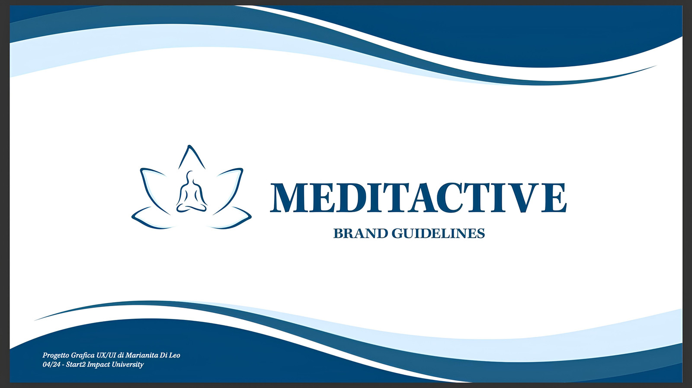
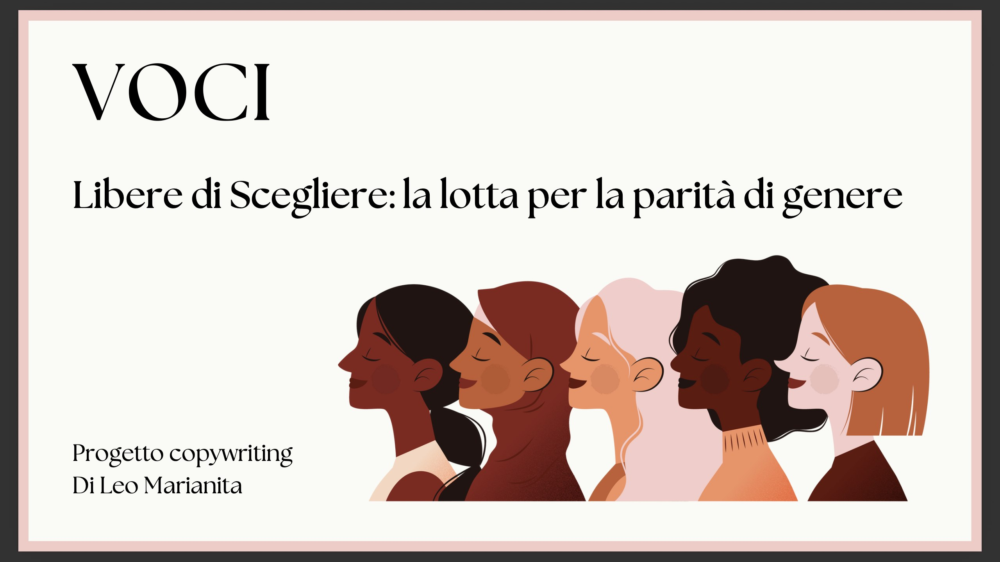
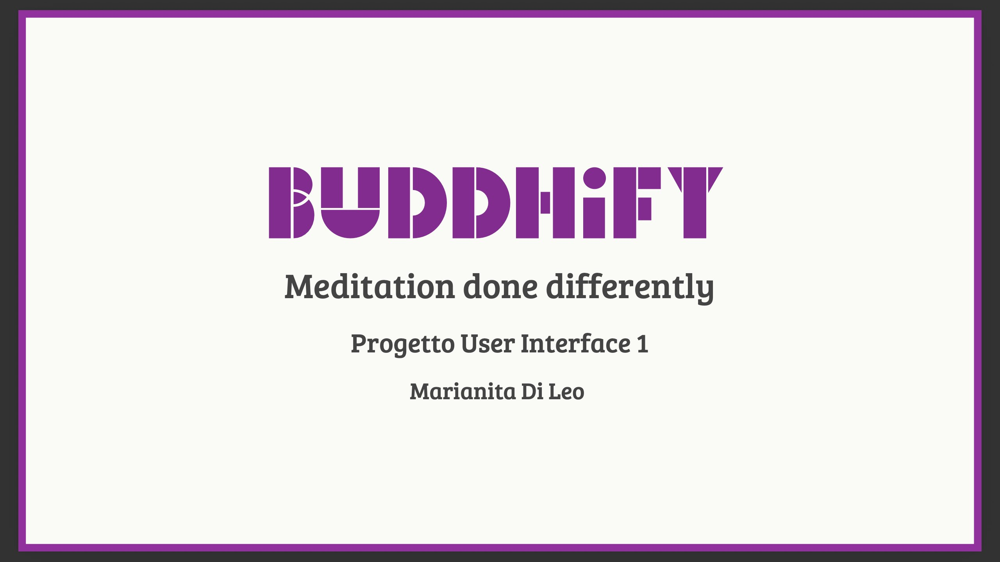

Ciao sono Marianita Di Leo
Sono una UX/UI Designer appassionata di design, tecnologia e creatività. Mi piace trasformare idee in esperienze digitali intuitive, accessibili e visivamente coinvolgenti, mettendo sempre al centro le esigenze delle persone.

Chi sono
Piacere, due parole su di me
Mi chiamo Marianita, ho 23 anni e vivo in Puglia. Nel 2023 ho frequentato un corso di sviluppo web, conseguendo un attestato come Full Stack Web Developer, che mi ha permesso di acquisire competenze nella programmazione e nello sviluppo di siti web. Attualmente sto proseguendo il mio percorso di formazione con start2impact, studiando per diventare UX/UI Designer. Grazie a questo percorso, posso unire le competenze tecniche dello sviluppo web a quelle creative della progettazione delle interfacce, prestando attenzione sia all'estetica che all'esperienza dell'utente.
Sono una persona curiosa, attenta ai dettagli e sempre pronta a imparare, sperimentare e affrontare nuove sfide. Il mio obiettivo è continuare a crescere professionalmente e contribuire alla creazione di prodotti digitali che siano non solo belli da vedere, ma soprattutto semplici e piacevoli da utilizzare.
- Attenzione ai dettagli — curo ogni elemento del mio lavoro, cercando il giusto equilibrio tra estetica e funzionalità.
- Curiosità — mi piace imparare cose nuove, sperimentare e ampliare continuamente le mie competenze.
- Organizzazione — pianifico le attività con attenzione, gestendo tempi e priorità.
Portfolio
Progetti in evidenza
Una selezione dei miei lavori.

Progetto Grafica
Progettazione dell’identità visiva di MeditActive attraverso la creazione di logo, palette cromatica, tipografia, icone e contenuti social.

Progetto Copywriting
Creazione di un articolo per Voci, un media online dedicato alla parità di genere, attraverso tecniche di copywriting e storytelling per sensibilizzare, coinvolgere e informare i lettori.

Progetto User Interface
Progettazione dell’interfaccia desktop del sito attraverso la definizione di colori, tipografia, componenti e interazioni, creando un prototipo navigabile, accessibile e coerente con l’identità visiva del brand.
Hai un progetto in mente?
Raccontamelo pure: rispondo di solito entro 24/48 ore.
Scrivimi un messaggio